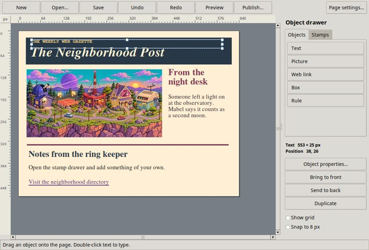

Make a homepage on your own computer.
Download Retro Page 0.11.2
- Windows 64-bit ZIP — Extract the whole ZIP, then double-click Retro Page.exe.
- Debian or Ubuntu package — Install the .deb, then open Retro Page from the applications menu.
- Python source ZIP — Run with Python 3.9 or newer on Linux, macOS or Windows.
Pick a starter or a blank page. The desktop and web editions share the same editor, including GIFs, Video Vault, HTML and CSS, media fallbacks, and the BBS Screen Painter.

Visit the published Late Night Signal sample · Open it in Retro Page
GIFs and homepage art
Browse the artwork drawer or download the GIF and art library for your own site.
Set up the Windows 3.1 reader · See the 8-bit editions and download the machine files
Save and share your site
Save keeps an editable .yst project with your pictures. Open that same file in the web editor or the desktop app. Export website ZIP saves files you can host yourself, including phone, classic browser and text editions.
Publish opens member sign-in and publishes to your own site address.